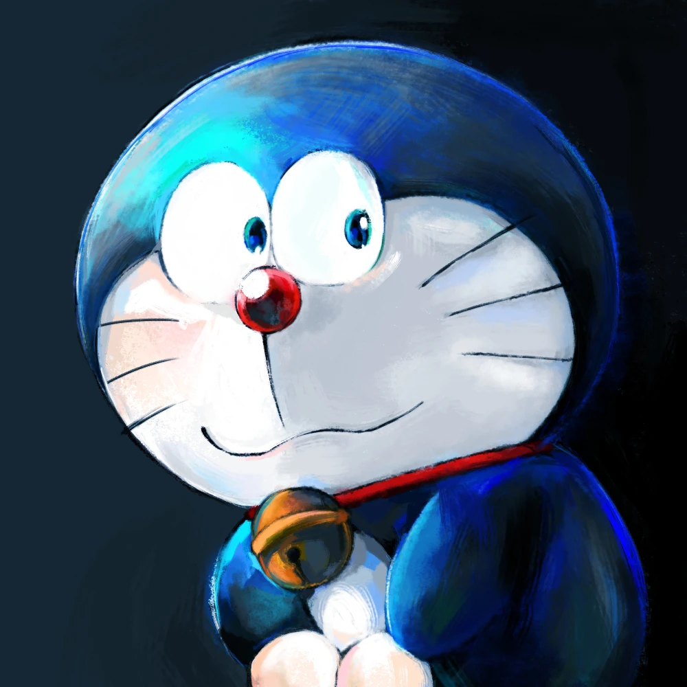

Tagosaku Mochidhuki is a Hyper Doraemon Creator in JAPAN
望月田吾作について

望月田吾作(もちづき たごさく)と申します。ドラえもんや藤子不二雄作品の二次創作を中心に、イラストを描いています。
お仕事のご依頼や感想は、 motitago(at)gmail.com までよろしくお願いします。
もし応援いただける場合には、ほしいものリストから何か送っていただけるとすごい喜びます。
望月田吾作(もちづき たごさく)と申します。ドラえもんや藤子不二雄作品の二次創作を中心に、イラストを描いています。
お仕事のご依頼や感想は、 motitago(at)gmail.com までよろしくお願いします。
もし応援いただける場合には、ほしいものリストから何か送っていただけるとすごい喜びます。